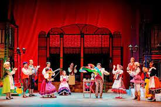
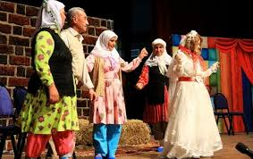
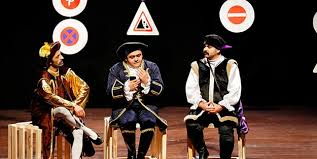
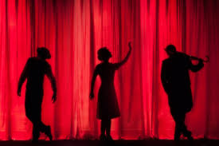
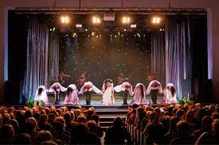

Herhangi bir olay, durum veya tasarının sahnede canlandırılması amacı ile yazılmış eserlere “dramatik metinler” denir. Bu metinlerin sahnede canlandırılması ile ortaya çıkan sanat da tiyatro olarak adlandırılır. Tiyatro kelimesi Eski Yunan’da “bir oyunun oynandığı yer”i karşılamaktaydı. Tiyatro belirli bir metne dayalı olarak sahnelendiği için hem edebî bir tür hem de güzel sanatların bir dalı olarak değerlendirilir. Tiyatro metinleri genellikle sahnede canlandırılmak üzere yazılır ancak çok nadir de olsa sadece okunmak üzere kaleme alınmış tiyatro eserleri de bulunmaktadır.
Tiyatro pek çok diğer sanat dalı gibi dinî törenlerden doğmuş, zamanla bu niteliğinden sıyrılarak bir sanat hâline gelmiştir. Tiyatronun kökeninin, insanın doğa olaylarını kendi beden hareketleriyle temsil etme çabalarına dayandığı söylenebilir. Tarihi Sümer ve Mısır gibi eski uygarlıklara kadar uzanan tiyatro, özellikle Eski Yunan’da gelişmiş ve çeşitlenmiştir. Eski Şamanist inanç ve törenleri de tiyatronun doğuşunda rol oynamıştır.
Batılı anlamda tiyatro türü Türk edebiyatına Tanzimat Dönemi‘nde girmiştir. Tanzimat’a kadar Türk edebiyatında Karagöz, kukla, orta oyunu ve meddah hikâyeleri, köy seyirlik oyunları gibi türler tiyatro türünün yerini tutmuştur. Şinasi‘nin “Şair Evlenmesi” adlı eseri, Batılı anlamda tiyatronun edebiyatımızdaki ilk örneği kabul edilir. Şinasi’den sonra Nâmık Kemâl, Ahmet Mithat Efendi, Recaizade Mahmut Ekrem ve Abdülhak Hamit Tarhan gibi yazarlar tiyatro türünde eserler kaleme almıştır. Ahmet Vefik Paşa’nın Batı tiyatrosundan yaptığı uyarlamalar da bu türün ülkemizde yerleşmesinde etkili olmuştur.
Dramatik metinler; olay, mekân, zaman ve kişiler gibi temel yapı unsurlarından oluşur. Tiyatroda olayların ortaya çıkıp gelişmesi ve sonuçlanması için genellikle bir çatışmaya ihtiyaç duyulur. Farklı değerler ile kişiliklerin karşı karşıya gelmesi ile oluşan çatışmalar, merak duygusunu da canlı tutar. Tiyatro, canlandırma esasına bağlı bir tür olduğu için mekâna ait unsurlar belli bir dekor çerçevesinde sahneye kurulur. Bu dekorun değişmesi ile çeşitli sahneler oluşur.
Tiyatro metinleri ele aldıkları konu ve konuyu işleyiş biçimlerine göre trajedi, komedi ve dram olmak üzere başlıca üç türe ayrılır. Trajedide kişi ve konular tarihten seçilirken izleyiciye bir dersin verilmesi amaçlanır. Trajedi kendine özgü kurallara bağlı bir türdür. Komedide insan ve hayatın gülünç yönleri ele alınır. Dram ise her iki türün özelliklerini kendisinde toplar ve hayatın bütün yönlerini sahneye taşır.
Tiyatro metinleri sahnede canlandırılmak amacıyla kaleme alındığı için diğer edebî türlerden farklı özellikler taşır. Bu özellikleri kavrayabilmek için öncelikle tiyatro ve onun öğeleriyle ilgili bazı kavramların açıklanması gereklidir.

TİYATRO NEDİR? TİYATRO TÜRÜNÜN GENEL ÖZELLİKLERİ
Eski Yunan’da “seyircilerin oturduğu yer” anlamına gelen tiyatro, “Bir hikâyeyi, sahne olarak ayrılmış bir yerde, oyuncuların söz ve hareketleriyle canlandırma sanatı.” olarak tanımlanmaktadır.
Günümüzde sahnede oynanmak üzere yazılan eserler de “tiyatro“, “oyun” veya “piyes” olarak adlandırılmaktadır. Sahnede oynanmak üzere yazılan eserlere genel olarak “dramatik metinler” de denir. Dramatik metinlerin merkezinde bir olay ve bu olaya katılan kişiler yer alır.
Bu tür metinler “serim, düğüm, çözüm” bölümleri ile ifade edilen üç evrede gelişir. Serim bölümünde, olaylara katılan kişilerin kimlikleri, olayla ilgileri ve konunun ne olduğu ortaya konulur. Düğüm bölümünde kişiler arasındaki çatışmalar sergilenir ve izleyicide merak duygusu uyandırılır. Çözüm, olaydaki çatışma ve sorunların bir sonuca ulaştırıldığı bölümdür.
Dramatik eserler olayların gelişimine göre “perde” ve “sahne“lere ayrılır. Perde, konunun ana bölümlerinden her birine verilen addır. Sahne ise her perdenin içinde yer alan küçük bölümlerdir. Türk edebiyatında sahne yerine “fıkra” ve “meclis” terimleri de kullanılmıştır.
Dramatik eserler, trajedi ve komedi olmak üzere başlıca iki tür altında incelenir. Diğer bütün türler bu iki ana türün gelişmesi ve değişmesi ile ortaya çıkmıştır.
Tiyatronun türleri ve bu türlerin özellikleri şunlardır:

Trajedi
Trajedi, konusunu efsanelerden veya tarihsel olaylardan alan, acıklı bir şekilde sonuçlanan tiyatro eserlerine verilen addır. Adını, Yunancada “keçi türküsü” anlamına gelen “tragedya” kelimesinden alan bu türün ilk örnekleri Eski Yunan’da görülür. Başlangıçta manzum olarak yazılan trajediler özellikle 17. yüzyılda Fransa’da nesir hâlinde de yazılmaya başlanmıştır. 19. yüzyıldan sonra da trajedinin yerini dram türünde eserler almıştır.
Tür olarak trajedinin en önemli özelliği kendisine özgü kurallara bağlı olmasıdır. Bu kuralların en önemlisi “üç birlik kuralı“dır.
Bunlardan ilki olan “zaman birliği” kuralına göre, bir trajedide olaylar en çok bir gün (24 saat) içinde geçmelidir.
“Mekân birliği” kuralı oyunun tek bir yerde geçmesini,
“olay birliği” ise trajedinin tek bir olay çevresinde gelişmesini ifade eder.
Trajedilerde genellikle üst tabakadan insanların hayatı konu edilir ve seçkin bir üslubun kullanılmasına özen gösterilir. Oyunun sonunda ders vermek ve hikmetli sözler söylemek de trajedilerin amaçları arasında yer alır. Trajedi türü, klasisizm olarak adlandırılan edebî akımın içinde biçimlendiği için onun bütün özelliklerini taşır. Ancak Türk edebiyatında trajedi yazan yazarlar, klasisizmin pek çok özelliğini bilerek terk eder ve kendi tercihlerini metinlere yansıtır. Klasisizme karşı çıkan romantizm akımı etkisinde yazılan tiyatro metinleri ise romantizmin coşku, duygusallık, iyi ve kötüyü bütün ayrıntıları ile sunma gibi özelliklerini taşır.
Dünya edebiyatında çok eski bir tür olan trajedi alanında;
Aiskhylos‘un (Ayklos) “Zincire Vurulmuş Prometheus”,
Sophokles‘in (Sofokles) “Antigone (Antigon)”,
Corneille‘in (Korneyl) “Attila” ve Racine‘in (Rasin) “Andromaque (Andromak)” adlı eserleri bu türün önemli örnekleri arasında yer alır.
Türk edebiyatında ise Abdülhak Hamid ile Orhan Asena trajedi türünde eserler vermiştir.

Komedi(Komedya)
İnsan, olay ve durumların gülünç yönlerini ele alıp işleyen oyunlara “komedi” adı verilir. Komediler pek çok tiyatro türü gibi Eski Yunan’daki çeşitli törenlerde oynanan oyunlardan çıkmıştır. Komediler ele aldığı konulara göre çeşitli adlar alır. Buna göre, insan karakterinin gülünç ve aksak yönlerini ele alan oyunlar “karakter komedisi”, toplumun gülünç ve aksak yönlerini yansıtan oyunlar “töre komedisi”, merak ve güldürü amacı güden oyunlar ise “entrika komedisi” olarak adlandırılır.
Dünya edebiyatında;
Komedi türünün dünya edebiyatında ilk temsilcisi Eski Yunan edebiyatı sanatçısı Aristophanes‘tir (Aristofanes).
Fransız sanatçı Moliere‘in (Molyer) “Cimri” ile “Kibarlık Budalası”,
Rus yazar Gogol‘un “Müfettiş” adlı eseri komedi türünün en önemli eserleri arasında yer alır.
Türk edebiyatında;
Batılı anlamda ilk tiyatro eseri olan Şinasi‘nin “Şair Evlenmesi”,
Haldun Taner‘in “Gözlerimi Kaparım Vazifemi Yaparım” ile “Sersem Kocanın Kurnaz Karısı”,
Turgut Özakman‘ın “Ah Şu Gençler” gibi eserleri komedi türünün bilinen örnekleri arasında yer alır.

Dram
Hayatın bütün gerçeklerini yansıtmayı amaçlayan ve her sınıftan insana yer veren oyunlar “dram” olarak adlandırılır. Dramlarda, trajedi ve komedi türlerinin özellikleri bir arada yer alır. Dramlarda, gerçeklik önemsediği için “üç birlik kuralı”na uyulmaz. Dram türündeki eserlerde hayatın iyi veya çirkin bütün yönleri sahnelenir.
Dram türünde;
İngiliz yazar Shakespeare (Şekspir) ve Fransız sanatçı Victor Hugo‘nun eserleri bu türün önemli örnekleri arasında yer alır.
Nâmık Kemâl‘in “Vatan yahut Silistre” adlı eseri ile Abdülhak Hamit Tarhan‘ın bazı eserleri bu türün örnekleri arasında yer alır.
Türk edebiyatına Tanzimat Dönemi‘nde giren tiyatro türünde; Şinasi, Namık Kemal, Abdülhak Hamit, Reşat Nuri Güntekin, Faruk Nafiz Çamlıbel, Ahmet Kutsi Tecer, Haldun Taner, Turan Oflazoğlu, Recep Bilginer ve Orhan Asena gibi isimler önemli tiyatro eserleri yazmışlardır.

Temel Tİyatro Terimleri
Bir tiyatronun hem metin olarak hem de bir sanat olarak bazı temel kavram ve terimleri vardır. Bu terimler ve tanımları şöyle sıralanabilir:
Dekor: Tiyatroda sahneyi eserin konusuna göre döşeyip hazırlamada kullanılan eşyanın toplu adı.
Kostüm: Tiyatroda sanatçıların oyuna ve oyunun konusuna uygun olarak giydikleri kıyafet.
Suflör: Sahnenin arkasında duran ve gerektiğinde oyunculara sözlerini fısıltıyla söyleyip hatırlatan görevli.
Replik: Tiyatro oyunlarında konuşanların birbirine söyledikleri sözlerden her birine verilen ad.
Sahne: Tiyatro eserinde bir perdelik bölümün, dekor bakımından değişik olan küçük kısımları.
Perde: Tiyatro eserinde bir perdenin açılmasından kapanmasına kadar geçen bölüm.
Kulis: Oyuncuların hazırlıklarını yaptığı ve sahneye çıkmak için beklediği sahne arkasındaki bölüm.
Mimik: Oyuncuların, duygu ve düşüncelerini yüz hareketleriyle anlatması.
Jest: Oyuncuların duygu ve düşüncelerini el, kol hareketleriyle anlatması.
Tirat: Oyuncuların bir defada yaptığı uzun konuşma.
Prömiyer: Oyunun, seyirci ile buluştuğu ilk gösterimine verilen ad.
Aktör: Erkek oyuncu.
Aktrist: Kadın oyuncu.
Pandomim: Sessiz hareket. Sessiz hareketler, jestler, yüz ifadeleri ve kostümler yoluyla duyguları, düşünceleri, tutkuları anlatmaya yarayan tiyatro çeşidi.